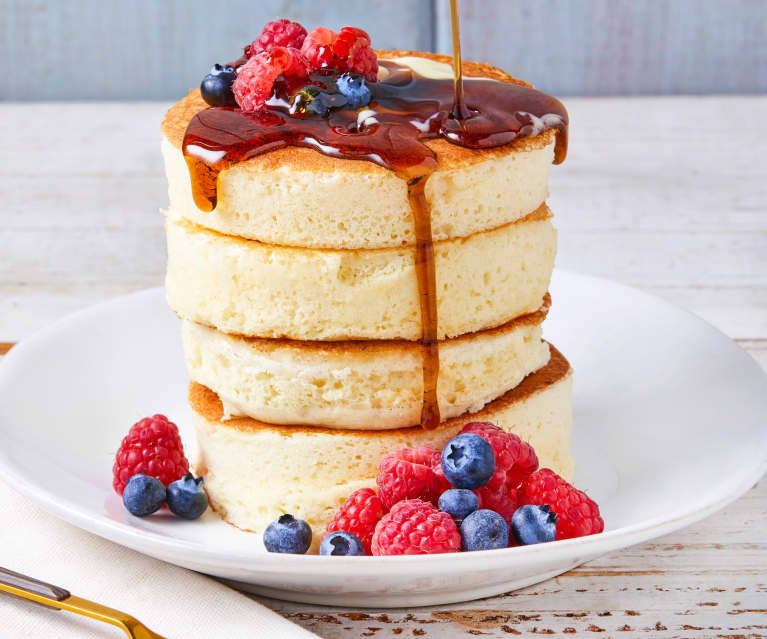

JAPANESE PANCAKES

DESCRIPTION
This fluffy pancake recipe written by user Diana71 on allrecipes.com. It is easy and delicious to make as an everyday breakfast. It uses simple easy to find ingredients straight from the pantry. Try it out now!
Link to recipe
[INGREDIENTS]
- 1 cup milk
- 1 tablespoon white vinegar
- 1 cup all-purpose flour
- 1/4 cup white sugar
- 2 teaspoons baking powder
- 2 large eggs, separated
- 1/4 teaspoon vanilla extract
- 1 tablespoon Japanese mayonnaise
- 1 tablespoon butter
- Combine milk and vinegar in a large bowl. Allow to sit until milk has soured, about 5 minutes.
- Meanwhile, sift together flour, sugar, and baking powder in a separate bowl; set aside.
- Beat egg whites in a glass, metal, or ceramic bowl with an electric mixer until stiff peaks form.
- Add egg yolks and vanilla extract to the soured milk; mix until well combined and pour into the center of the flour mixture. Use a whisk to combine all ingredients. Add mayonnaise and stir until there are no lumps. Fold in egg whites.
- Heat a griddle on the stovetop over medium-low heat and melt butter. Grease round pancake molds and place onto the buttered griddle. Fill each mold halfway with batter. Cook until pancakes are golden brown on the bottom and not too liquid across the top, 4 to 6 minutes. Flip each pancake and mold together. Cook until the other sides are golden and pancakes have doubled in thickness, 4 to 6 more minutes. Slide the molds off the pancakes.
BACK TO HOMEPAGE